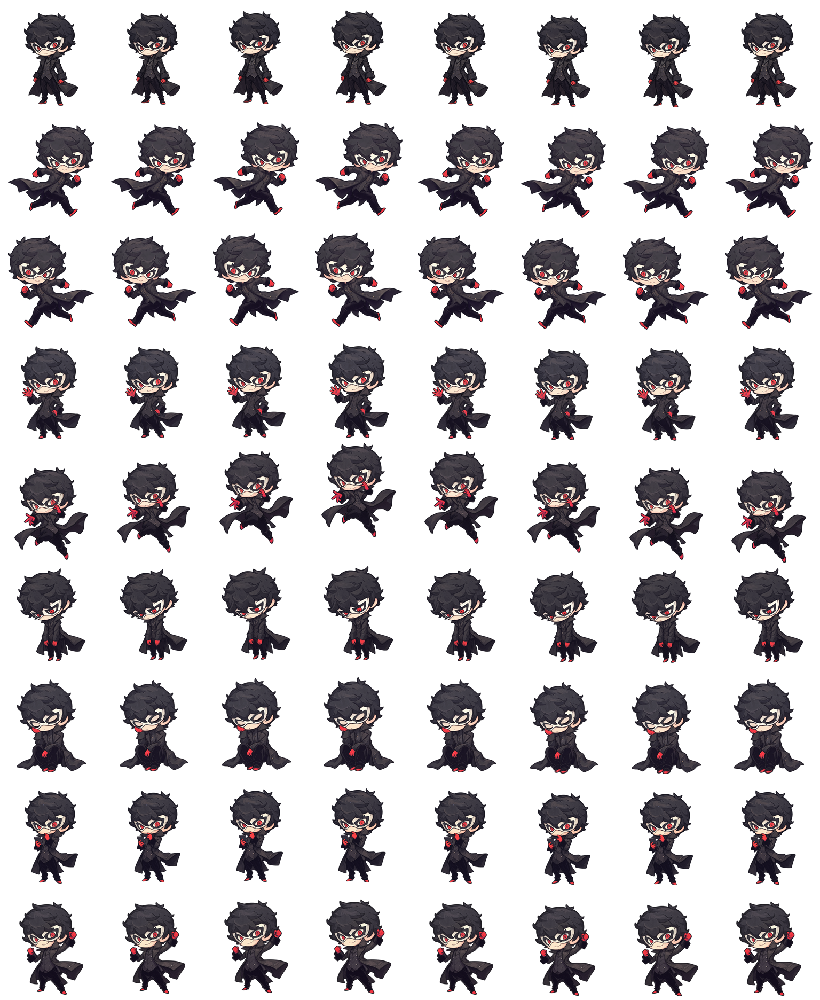

Meu pet
O pet que está na tela, e os que você já tem.
Pet ativo
Biblioteca
Importar do computador
A pasta precisa ter o pet.json e a folha de desenhos. Para trazer pets
prontos da internet, use a Lojinha de pets.
Quer criar seu próprio pet?
Você pode pedir para uma IA preparar as artes ou desenhá-las por conta própria.
No final, o pet será uma pasta com apenas dois arquivos obrigatórios:
pet.json e spritesheet.png.
Opção 1 — pedir para uma IA
Anexe uma imagem do personagem junto com o texto abaixo. Sem uma imagem de referência, a IA precisará adivinhar o rosto, a roupa e as cores, e o resultado será bem menos parecido.
Substitua tudo que estiver entre colchetes e envie o prompt para uma IA que gere imagens. Peça para ela criar as imagens separadas primeiro e somente depois montar os arquivos do SoftPet.
Opção 2 — fazer as artes você mesmo
Crie uma cartela de imagens com estas especificações:
- Formato recomendado: PNG com fundo transparente.
- Também são aceitos arquivos WebP ou GIF.
- Tamanho exato: 1536 × 1872 pixels.
- Grade: 8 colunas × 9 linhas.
- Cada quadradinho: 192 × 208 pixels.
- Não corte cabelo, pés, roupa ou acessórios nas bordas dos quadradinhos.

Cada linha da cartela representa uma situação, sempre nesta ordem:
| Linha 1 | parado (é a mais importante) |
| Linha 2 | andando para a direita |
| Linha 3 | andando para a esquerda |
| Linha 4 | acenando |
| Linha 5 | pulando |
| Linha 6 | deu erro |
| Linha 7 | esperando |
| Linha 8 | trabalhando |
| Linha 9 | terminou a tarefa |
Se sobrarem quadradinhos no fim de uma linha, deixe-os totalmente transparentes.
Além da imagem, crie um arquivo de texto chamado pet.json. Você pode
copiar o modelo mostrado no prompt acima. O nome informado em
spritesheetPath precisa ser exatamente igual ao nome da sua imagem.
Com os dois arquivos prontos na mesma pasta, é só clicar em Importar de uma pasta aqui em cima.
Lojinha de pets
Acervos públicos de onde trazer pets novos.
Fontes
Salvar deixa a fonte fixa aqui. Abrir consulta uma vez, sem guardar.
Pets da fonte
Acesso ao GitHub
Pets da comunidade Soft
Pets criados e compartilhados por usuários do Softpet.
Compartilhar meu pet
Você escolhe a pasta do pet. O envio será analisado antes de aparecer para outras pessoas.
Galeria
Depuração
Forçar estados a qualquer momento.
Animações do pet ativo
Ajuda a conferir emenda de frame e salto de pose.
Notificações de exemplo
Exercitam o balão e a máquina de prioridade.
Aplicativo
O pet continua na bandeja depois de fechar esta janela.
Solução de problemas
Use este botão se o pet travar, desaparecer ou apresentar algum comportamento estranho. Ele será recarregado sem fechar o Softpet.
Atualizações
O Softpet também verifica automaticamente ao iniciar e a cada quatro horas.